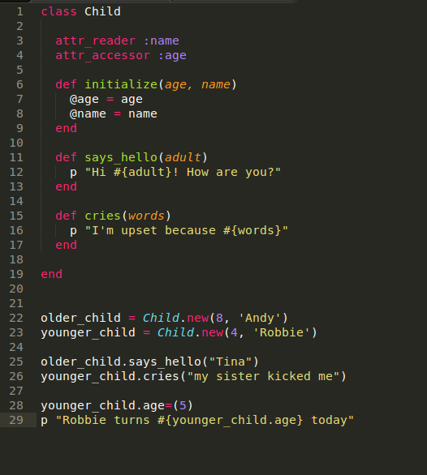
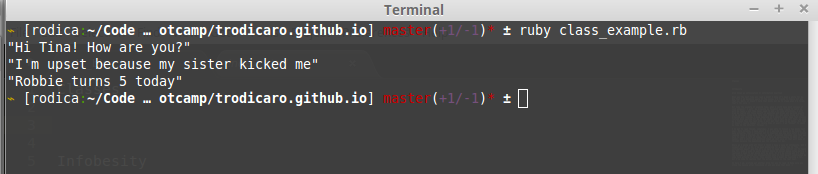

Ruby Classes
When, why, and how to use classes
06/21/15
Let's take a look at a simple class I built:

And the accompanying output:

This is a simple, yet relevant example of how a class can be used. Using a class is recommended when the object is more complex than an array (think lined up cubbies) or a hash (think dictionary).
A class has attributes and behaviors:
- attributes: age, name
- behaviors: says_hello, cries
Line 3 is the better form of:
def name(name)
@name
endLine 4 is the better form of:
def age(age)
@age
end
def age=(age)
@age = age
endLines 22 and 23 are creating 2 new instances of the child object. The following 2 lines of code are calling methods associated with these objects. Last couple lines of code show how the age accessor works: setter on line 28 and getter on line 29.
These are a few of the most commonly encountered operations with classes. Hope you find the description useful!